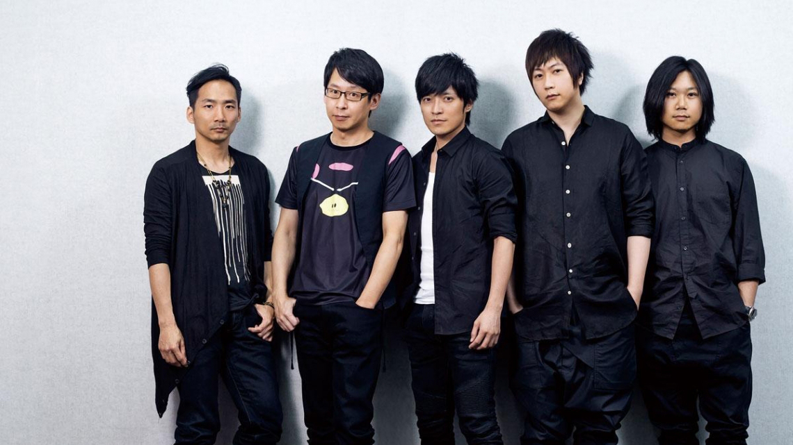
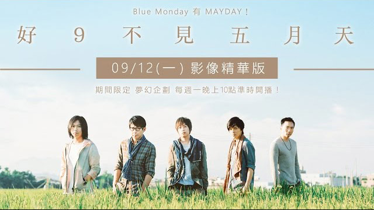

五月天
五月天（英文：MayDay） [1][2] 是於1999年出道的臺灣樂團，由主唱阿信、團長暨吉他手怪獸、吉他手石頭、貝斯手瑪莎和鼓手冠佑共五人組成；除冠佑外，其餘四人皆畢業自臺北市國立師大附中。樂團前身為「So
Band」樂團，於1997年3月29日改為現名，其名稱取自瑪莎在BBS的代號「MayDay」。
成員介紹
| 本名 |
藝名 |
英文名 |
定位 |
| 陳信宏 |
阿信 |
Ashin |
主唱 |
| 溫尚翊 |
怪獸 |
Monster |
吉他手、團長 |
| 石錦航 |
石頭 |
Stone |
吉他手 |
| 蔡昇晏 |
瑪莎 |
Masa |
貝斯手 |
| 劉冠佑 |
冠佑 |
AMing |
鼓手 |
樂團歷程
- 1995－97年：So Band
- 1997－99年（五月天正式出道年）：地下到主流
- 1999－2001年：《愛情萬歲》與《人生海海》
- 2001－05年：退伍復出後到《知足》
- 2006－07年：《為愛而生》與「離開地球表面」演唱會
- 2008年：《後青春期的詩》與「十萬人出頭天」演唱會
- 2009－10年：第三座「最佳樂團獎」與「D.N.A」演唱會
- 2011年：電影「追夢3DNA」與《第二人生》
- 2012年：六座金曲獎與專輯十白金殊榮、首登北京鳥巢
- 2013年：電影「諾亞方舟」到《步步》
- 2014年：麥迪遜廣場花園開唱
- 2015年：登日本武道館
- 2016年：《自傳》
- 2017－18年：「人生無限公司」巡迴 與 成軍20週年
- 2019年：電影「人生無限公司3D」與「藍色三部曲」20週年
音樂作品
- 五月天第一張創作專輯（1999年7月7日
- 愛情萬歲（2000年7月7日）
- 人生海海（2001年7月6日）
- 時光機（2003年11月11日）
- 神的孩子都在跳舞（2004年11月5日）
- 為愛而生（2006年12月29日）
- 後青春期的詩（2008年10月23日）
- 第二人生（2011年12月16日）
- 自傳（2016年7月21日）
生活照

